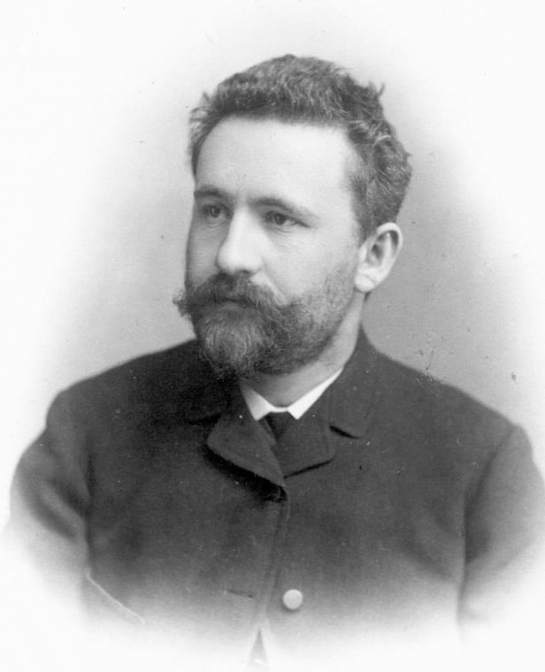

Schizophrenic delusions are false beliefs that individuals with schizophrenia strongly hold despite evidence to the contrary. These delusions often involve distorted interpretations of reality...
The diagnosis of schizophrenia is a comprehensive process involving a thorough assessment of symptoms, medical history, and psychological evaluations. Mental health professionals refer to the Diagnostic and Statistical Manual of Mental Disorders (DSM-5) criteria...
The prognosis of schizophrenia varies for each individual. Early diagnosis and intervention can significantly improve outcomes. With proper treatment, including medication, therapy, and community support, many individuals with schizophrenia lead fulfilling lives...
Discharge from a hospital following a schizophrenia-related episode is a crucial step in the recovery process. It involves a transition from acute care to ongoing support. Discharge plans typically include medication management, therapy, and community resources...
Emil Kraepelin, a pioneering psychiatrist, made significant contributions to the understanding of mental disorders. His work laid the foundation for the modern classification of psychiatric illnesses. Kraepelin's emphasis on empirical observation and classification has shaped the field of psychiatry...
Do you find yourself in a different world and frustrated?
Do you feel trapped in a whirlwind?